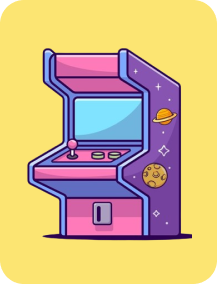

<section class="container_cards">
  <div ng-controller="GameCtrl as vm">
    <div class="cartas">
      <div class="carta" ng-repeat="carta in vm.cartas" ng-click="vm.seleccionarCarta(carta)">
        
      </div>
    </div>
  </div>
</section>
